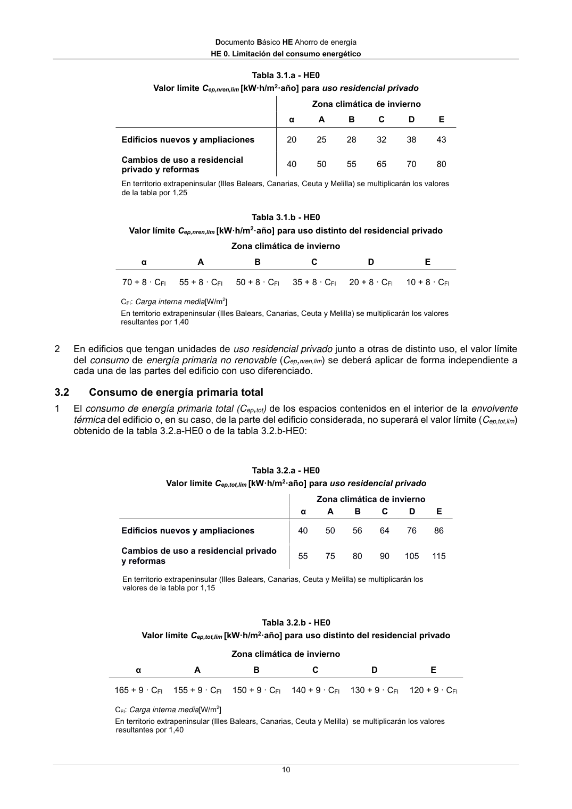

DB-HE · 3.2 Consumo de energía primaria total · versión 2022-06-14
SHA256: 7f890bd495552e979f83f72c5f5c7b642e745911a8e343a7b5b73023ce0e1f05 · página física 10 de 56 · métodos de encabezado
solo si están cotejados.
Formatos: Markdown · JSON de bloques · PDF p. 10 · imagen PNG
Documento Básico HE Ahorro de energía HE 0. Limitación del consumo energético 10 Tabla 3.1.a - HE0 Valor límite Cep,nren,lim [kW·h/m2·año] para uso residencial privado Zona climática de invierno α A B C D E Edificios nuevos y ampliaciones 20 25 28 32 38 43 Cambios de uso a residencial privado y reformas 40 50 55 65 70 80 En territorio extrapeninsular (Illes Balears, Canarias, Ceuta y Melilla) se multiplicarán los valores de la tabla por 1,25 Tabla 3.1.b - HE0 Valor límite Cep,nren,lim [kW·h/m2·año] para uso distinto del residencial privado Zona climática de invierno α A B C D E 70 + 8 · CFI 55 + 8 · CFI 50 + 8 · CFI 35 + 8 · CFI 20 + 8 · CFI 10 + 8 · CFI CFI: Carga interna media[W/m2] En territorio extrapeninsular (Illes Balears, Canarias, Ceuta y Melilla) se multiplicarán los valores resultantes por 1,40 2 En edificios que tengan unidades de uso residencial privado junto a otras de distinto uso, el valor límite del consumo de energía primaria no renovable (Cep,nren,lim) se deberá aplicar de forma independiente a cada una de las partes del edificio con uso diferenciado. 3.2 Consumo de energía primaria total 1 El consumo de energía primaria total (Cep,tot) de los espacios contenidos en el interior de la envolvente térmica del edificio o, en su caso, de la parte del edificio considerada, no superará el valor límite (Cep,tot,lim) obtenido de la tabla 3.2.a-HE0 o de la tabla 3.2.b-HE0: Tabla 3.2.a - HE0 Valor límite Cep,tot,lim [kW·h/m2·año] para uso residencial privado Zona climática de invierno α A B C D E Edificios nuevos y ampliaciones 40 50 56 64 76 86 Cambios de uso a residencial privado y reformas 55 75 80 90 105 115 En territorio extrapeninsular (Illes Balears, Canarias, Ceuta y Melilla) se multiplicarán los valores de la tabla por 1,15 Tabla 3.2.b - HE0 Valor límite Cep,tot,lim [kW·h/m2·año] para uso distinto del residencial privado Zona climática de invierno α A B C D E 165 + 9 · CFI 155 + 9 · CFI 150 + 9 · CFI 140 + 9 · CFI 130 + 9 · CFI 120 + 9 · CFI CFI: Carga interna media[W/m2] En territorio extrapeninsular (Illes Balears, Canarias, Ceuta y Melilla) se multiplicarán los valores resultantes por 1,40
